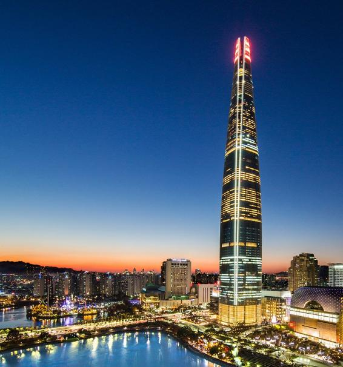

ENTJ 추천 여행지
서울 잠실·여의도

추천 이유
ENTJ는 목표 지향적이며 새로운 경험과 성취를 추구하는 성향입니다. 서울의 잠실과 여의도는 현대적인 도시 풍경과 다양한 문화 콘텐츠, 프리미엄 쇼핑과 미식 경험을 동시에 즐길 수 있어 ENTJ에게 잘 어울리는 여행지입니다.
추천 여행 코스
- 롯데월드타워 서울스카이 전망대
- 석촌호수 산책
- 더현대 서울 방문
- 팝업스토어 및 프리미엄 쇼핑
- 파인다이닝 레스토랑 체험
추천 포인트
- 서울의 화려한 스카이라인 감상
- 최신 트렌드와 문화 체험 가능
- 쇼핑과 미식을 동시에 즐길 수 있음
- 도시적인 감성과 프리미엄 여행 경험